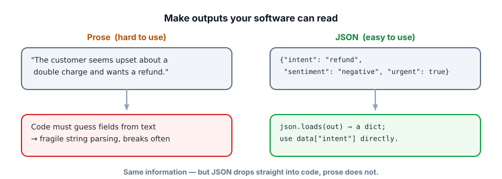
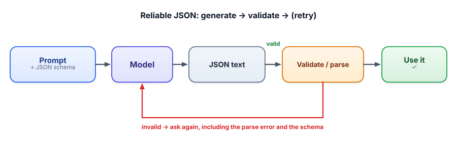

Structured output & JSON
The moment you put an LLM inside software, you need its output in a shape code can read. This lesson is how you turn a chatty model into a reliable component — the bridge between “cool demo” and “shipped feature.”
Why structured output is non-negotiable for products
A human can read “the customer seems upset and wants a refund.” Your code can’t — not reliably. To route a ticket, update a database, or call another function, you need fields: intent="refund", sentiment="negative", urgent=true. Free-form prose forces fragile string-parsing that breaks the first time the model rephrases. Structured output — usually JSON — is what lets an LLM slot into a real system. It’s also the foundation of tool/function calling in Track 4, which is just structured output the model fills in.

Structured output means the model returns data in a fixed, machine-readable format — almost always JSON (JavaScript Object Notation: keys and values like {"urgent": true}). A schema is the contract describing the expected shape: which fields exist, their types, and allowed values. Validation is checking the model’s output actually matches that schema before you trust it.
Getting JSON reliably: four levers
Asking nicely isn’t enough on its own — models love to add “Sure! Here’s the JSON:” or a trailing explanation that breaks parsing. Use these together:
- Specify the exact shape in the prompt, ideally with a concrete example of the JSON (this is few-shot from 2.2 applied to format).
- Use a JSON/structured-output mode if your runtime has one. It constrains the model so the output is always valid JSON. Ollama supports this for free with
format="json"(and can even take a JSON schema). - Validate the parsed output against your schema — check fields, types, and allowed values, not just that it parses.
- Retry or repair on failure: send the error back and ask the model to fix it. This loop is what makes it production-grade.

Validate it yourself
Here’s a real validator (running in your browser). Edit the “model output,” or click a failure button, and watch validation catch exactly what’s wrong. This is the check your code must do on every response.
JSON validator
Target schema: intent ∈ {refund, billing, technical, other} · sentiment ∈ {positive, negative, mixed, neutral} · urgent : boolean
The whole pattern, end to end, with a free local model. pydantic defines the schema and validates types in one line:
!pip install ollama pydantic
import json, ollama
from pydantic import BaseModel, ValidationError
class Ticket(BaseModel): # the schema, as a Python class
intent: str
sentiment: str
urgent: bool
def extract(text, tries=2):
prompt = f"""Extract fields from the ticket as JSON with keys
intent (refund/billing/technical/other), sentiment (positive/negative/mixed/neutral), urgent (true/false).
Ticket: "{text}" """
for attempt in range(tries):
resp = ollama.chat(model="llama3.2",
messages=[{"role": "user", "content": prompt}],
format="json") # force valid JSON (free!)
try:
return Ticket(**json.loads(resp["message"]["content"])) # parse + validate
except (json.JSONDecodeError, ValidationError) as e:
prompt += f"\nYour last output was invalid: {e}. Return ONLY valid JSON." # retry w/ error
raise RuntimeError("Model could not produce valid JSON")
t = extract("My card was charged twice and no one has replied in 3 days!")
print(t.intent, t.sentiment, t.urgent) # -> refund negative TrueNotice what makes this robust: format="json" stops the model adding prose, pydantic guarantees the types are right before you use them, and the retry loop feeds the error back so a one-off slip self-corrects. That’s the difference between a script and a feature.
- Software needs machine-readable output; JSON is the default, and it underpins tool calling (Track 4).
- Get reliable JSON with four levers: specify the shape, use a JSON mode, validate, and retry on failure.
- Validate values, not just syntax — check required fields, types, and allowed enums.
- The production pattern is a generate → validate → retry-with-error loop; never trust raw output as data.
- Tools like pydantic turn a schema into one-line validation; runtimes like Ollama’s
format="json"make valid JSON free.
Your extraction endpoint works 95% of the time, but occasionally the model returns {"urgent": "yes"} instead of a boolean and a downstream service crashes. Best fix?
1. Design a JSON schema for extracting a calendar event from a message: title, date, start time, attendees (list), and whether it’s all-day. Which fields might legitimately be missing, and how do you represent that?
2. The model returns valid JSON, but "date": "next Tuesday" instead of an ISO date. Is this a parsing failure or a validation failure? How do you handle it?
3. Why is “the output parsed as JSON” not enough to trust it?
▸ Show solutions & reasoning
1. Something like: {title: str, date: str (ISO), start: str|null, attendees: list[str], all_day: bool}. Optional fields (a missing time, no attendees) should be represented explicitly — null or an empty list — and your schema should allow that (e.g., start: Optional[str]). Forcing every field to be present pushes the model to invent values; allowing nulls lets it honestly say “absent,” which you then handle in code.
2. Neither pure parsing nor a type error — it’s a semantic validation failure: the value is a string (correct type) but not the format you need. Handle it by validating the value (e.g., that date matches an ISO pattern), and either instruct the model to output ISO dates with an example, or post-process “next Tuesday” into a real date. Type-checking alone won’t catch this; value-checking will.
3. Because valid JSON only guarantees syntax, not meaning. {"urgent": "yes"} parses fine but is the wrong type; {"intent": "banana"} parses fine but isn’t an allowed value; a required field can be missing entirely. Trusting “it parsed” lets bad data into your system. You must validate fields, types, and allowed values — the shape and the contents.
“JSON mode” and schema-constrained output aren’t just a stern instruction — they change the decoding step from Track 1. Remember the model outputs a probability over every possible next token, and a sampler picks one. Constrained decoding adds a filter: at each step, it masks out any token that would make the output violate the grammar (or schema), so only tokens that keep the JSON valid can be chosen.
If the model is mid-string, a closing brace is forbidden; if a field expects a boolean, only true/false tokens are allowed. The result is output that is guaranteed to parse, by construction. Providers expose this as “JSON mode,” “structured outputs,” or “function calling”; libraries like Outlines and llama.cpp grammars do it locally.
Two caveats keep you honest. First, constrained decoding guarantees shape, not truth — the model can still fill valid fields with wrong values, so semantic validation and grounding still matter. Second, even with a JSON mode, keep the validate-and-retry loop: it’s your safety net for the value-level errors a grammar can’t catch (wrong enum, impossible date, hallucinated id). Shape from the decoder, correctness from your validation — use both.
You can now make outputs that software trusts. The last prompting lesson zooms out to the reusable patterns and anti-patterns — the playbook pros reach for, and the traps that quietly wreck prompts.